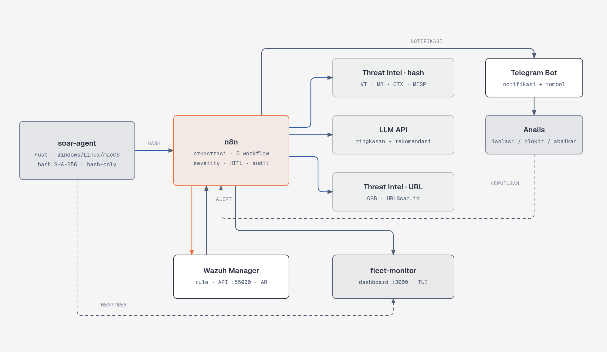
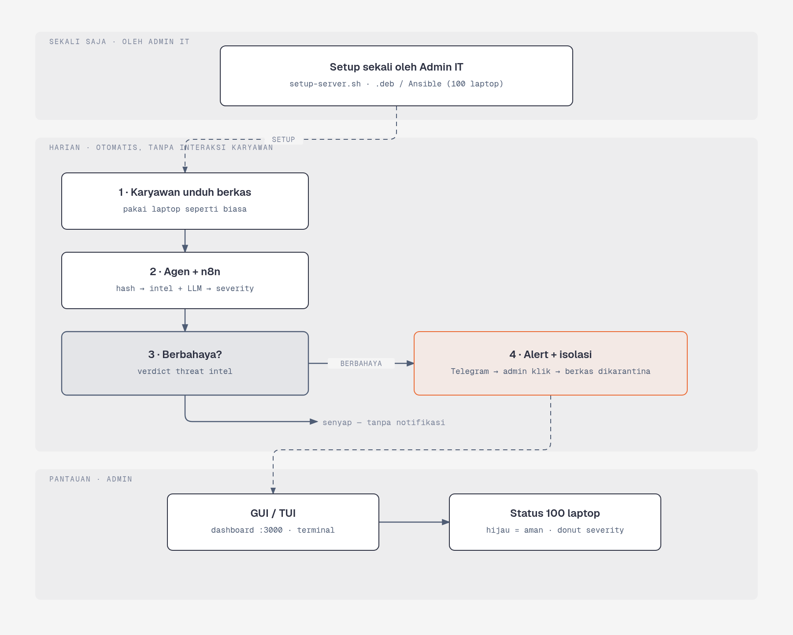
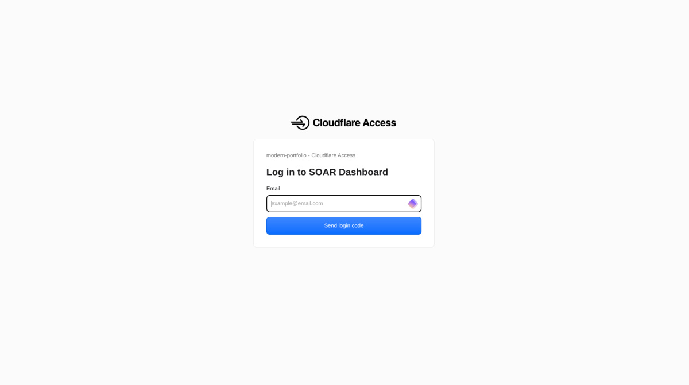
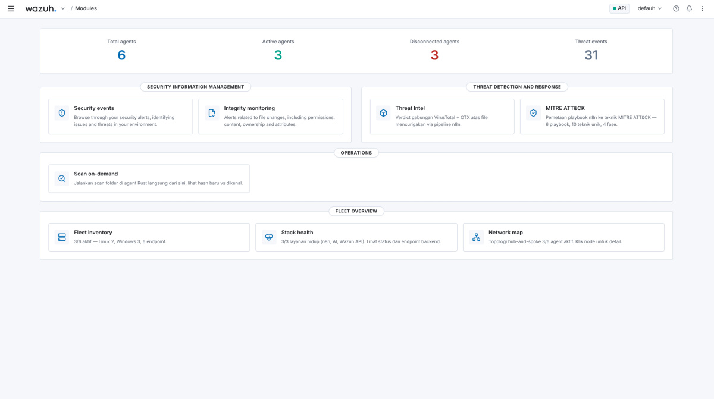
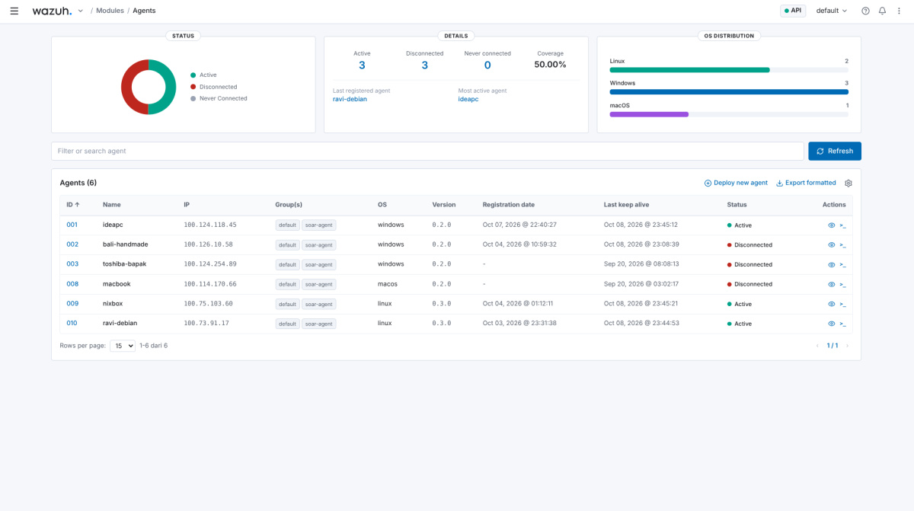
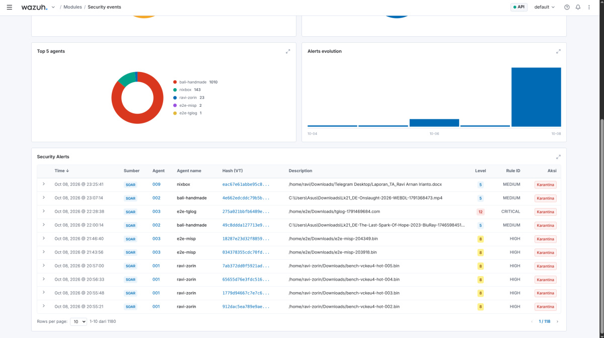
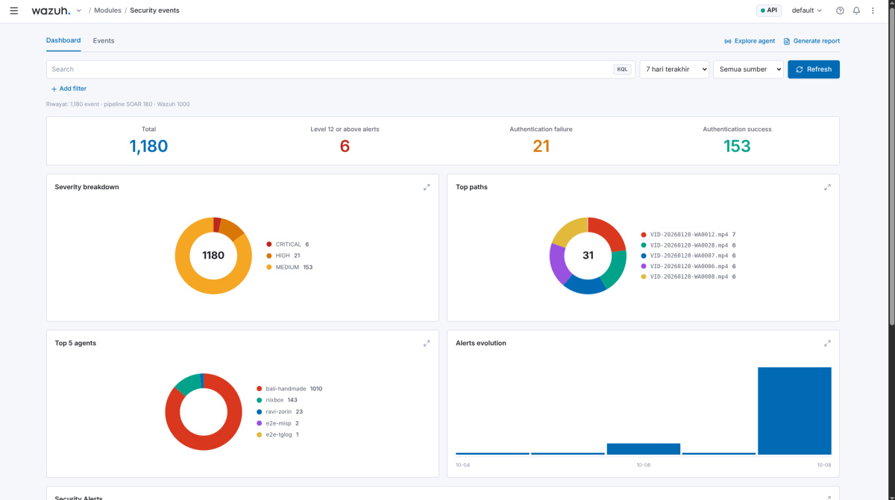
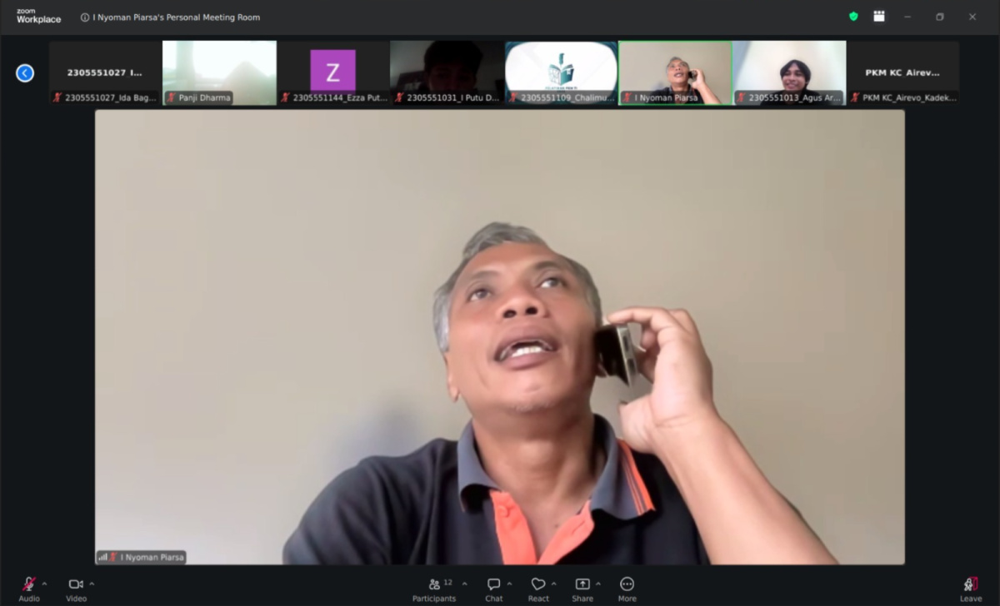
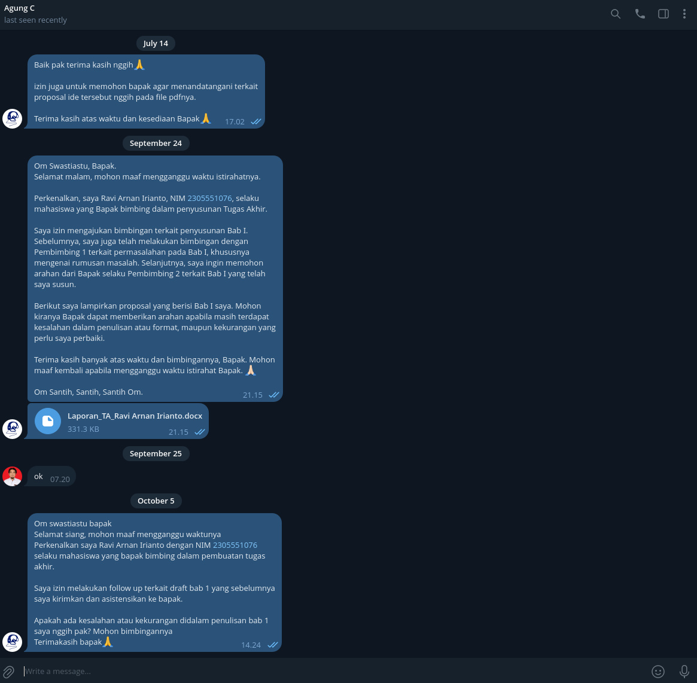

| NIM | 2305551076 |
| Nama | Ravi Arnan Irianto |
| Bidang Keahlian | Network and Cloud Computing |
| Mata Kuliah | Proyek 1 |
| Judul | Implementasi Sistem SOAR Open-Source Berbasis n8n untuk Deteksi dan Respons Ancaman Malware dan Phishing dengan Mitigasi Aktif Human-in-the-Loop (Studi Kasus: CV Bali Handmade) |
| Dosen Pembimbing | 1. Ir. I Nyoman Piarsa, ST., MT., IPM. 2. A.A. Kt Agung Cahyawan Wiranatha, S.T., M.T. |
Dokumen ini merupakan laporan bimbingan Tugas Akhir yang memuat tiga hal: tindak lanjut atas arahan bimbingan pada tanggal 3 September 2026, perkembangan pelaksanaan pekerjaan sampai dengan 8 Oktober 2026, serta perbandingan capaian terhadap milestone yang telah disusun pada awal semester. Laporan ini dilampiri bukti pelaksanaan berupa kode, pengujian, dan hasil pengukuran pada sistem yang berjalan (live).
Sistem telah dijalankan secara langsung pada lingkungan uji dan diuji secara menyeluruh dari hulu ke hilir (end-to-end). Seluruh milestone yang jatuh tempo pada periode ini telah diselesaikan, dan beberapa milestone berikutnya telah berjalan lebih awal dari jadwal.
Arahan yang diberikan pada bimbingan tanggal 3 September 2026 beserta tindak lanjutnya disajikan pada Tabel 1.
| Arahan | Status | Bukti |
|---|---|---|
| Revisi diagram: n8n sebagai mesin orkestrasi pusat dan alur yang eksplisit | Selesai | Diagram arsitektur dan alur yang telah direvisi (Gambar 1) |
| Dokumentasi format pertukaran data JSON (skema disepakati) | Selesai | Dokumentasi skema pertukaran data (payload) JSON yang disepakati |
| Perluasan cakupan pemantauan: perangkat USB dan perpindahan berkas | Selesai | Agen memantau berkas di folder Unduhan, Desktop, dan perangkat USB secara rekursif |
| Purwarupa agen ringan (saran pembimbing: Go) | Selesai | Agen ringan mandiri berukuran ±5 MB dan pemakaian memori ±5 MB (agen standar ±50 MB); alasan teknis pemilihan bahasa pemrograman terdokumentasi |
| Skenario laporan gaya bahasa awam (100 workstation + human-in-the-loop) | Selesai | Diagram dan narasi alur dari sudut pandang orang awam (Gambar 2) |
| Pemeriksaan tata bahasa dan kejelasan laporan per paragraf | Berjalan | Draf laporan Tugas Akhir yang terus direvisi (khususnya bab pendahuluan) |
| Progres mingguan dan demo (1 server + beberapa klien) | Berjalan | Sistem berjalan (live) dengan dasbor pemantauan dan armada 7 perangkat |
Sejak bimbingan terakhir, pekerjaan difokuskan pada keandalan dan keamanan platform, perluasan sumber intel, serta penyediaan bukti kuantitatif. Perkembangan tersebut dirangkum sebagai berikut, dan tangkapan layar sistem yang berjalan disajikan pada Lampiran (Gambar 3 sampai Gambar 7).
a. Keandalan dan keamanan platform.
b. Perluasan sumber threat intelligence.
c. Keterjelasan dan keteramatan (explainability dan observability).
d. Perbaikan kualitas keputusan. Keputusan "malware" kini berbasis indikator threat intelligence, bukan semata tingkat aturan FIM; berkas konfigurasi sistem dan berkas jinak tidak lagi memicu notifikasi keliru (false positive).
Perbandingan capaian terhadap tujuh milestone Semester 7 disajikan pada Tabel 2. Bobot ketujuh milestone diasumsikan setara, dan angka capaian disusun berdasarkan bukti artefak (kode, pengujian, dan hasil pengukuran), bukan perkiraan.
| No | Milestone | Target | Capaian | Keterangan / Bukti |
|---|---|---|---|---|
| M1 | Konsolidasi purwarupa dan lingkungan uji | Agustus 2026 | 100% | Selesai: perbaikan keandalan tuntas, konfigurasi ter-version-control, prosedur pengujian baku |
| M2 | Perluasan verifikasi ancaman multi-sumber | September 2026 | 100% | Selesai: MalwareBazaar, deteksi berkas eksekutabel, pemindaian ulang terjadwal, dan MISP aktif |
| M3 | Penyempurnaan respons berjenjang berbasis keyakinan | Oktober 2026 | 85% | Jalur human-in-the-loop berjalan; sisa: dokumen matriks keyakinan terhadap aksi |
| M4 | Integrasi analisis LLM dan explainability | Oktober 2026 | 80% | Integrasi LLM, keterjelasan, dan jejak audit berjalan; sisa: pengujian konsistensi keluaran LLM |
| M5 | Pengerasan keamanan dan reproduksibilitas | November 2026 | 60% | Infrastructure as Code dan penggelaran idempoten selesai; sisa: pembatasan firewall dan penggantian kredensial bawaan |
| M6 | Pengujian dan evaluasi kuantitatif | Nov–Des 2026 | 90% | N≥30, uji beban, laju false-negative, pemetaan MITRE ATT&CK, serta MTTR human-in-the-loop dan cache telah diukur |
| M7 | Penyusunan laporan dan seminar Proyek 1 | Des 2026–Jan 2027 | 50% | Draf laporan berjalan; seminar akhir belum dilaksanakan |
Rata-rata capaian ketujuh milestone adalah sekitar 81%. Dengan mengacu jadwal, pada awal Oktober seharusnya baru milestone M1 dan M2 yang tuntas serta M3 dan M4 sedang berjalan; kenyataannya M5 dan M6 telah berjalan lebih awal. Dengan demikian pelaksanaan berada lebih cepat dari jadwal.
Ringkasan hasil pengukuran kuantitatif pada sistem disajikan pada Tabel 3. Seluruh angka diperoleh dari sistem yang berjalan, bukan estimasi.
| Metrik | Hasil | Keterangan |
|---|---|---|
| MTTR malware (isolasi otomatis) | 1,68 detik (N=15) | Ujung ke ujung, cache VirusTotal hangat |
| MTTR ujung ke ujung (via fleet-log) | 3,00 detik (N=30) | Injeksi sampai verdict tercatat |
| MTTR human-in-the-loop, notifikasi | 21,05 detik (N=5) | Injeksi sampai notifikasi Telegram bertombol (~18 detik di antaranya biaya LLM) |
| MTTR human-in-the-loop, eksekusi AR | 0,07 detik (N=5) | Setelah keputusan sampai perintah Active Response |
| Throughput | 34 alert/detik (N=20) | Uji beban pada webhook |
| Laju false-negative | 0,0% (N=15) | Seluruh berkas berisiko berhasil terdeteksi |
| Penekanan false-positive | 100% (N=8) | Delapan alert dasar menjadi nol notifikasi |
Rencana tindak lanjut penyusunan Tugas Akhir setelah laporan ini adalah sebagai berikut.
Demikian laporan bimbingan ini disampaikan. Sistem telah berjalan dan teruji, serta capaian pelaksanaan berada lebih cepat dari jadwal. Besar harapan atas koreksi dan arahan dari Bapak untuk penyempurnaan Tugas Akhir ini.
Lampiran memuat artefak pendukung pekerjaan (Gambar 1–2), tangkapan layar sistem yang berjalan (Gambar 3–7), serta bukti pelaksanaan bimbingan bersama kedua dosen pembimbing (Gambar 8–9).








